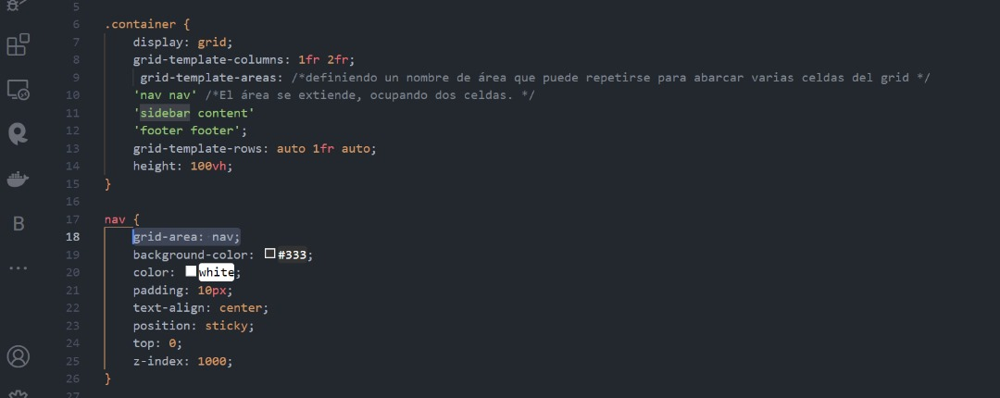

Introducción a CSS Grid y Nav Bar
CSS Grid Layout es un sistema de diseño bidimensional que te permite crear complejos diseños web fácilmente. Usando grid, puedes organizar los elementos en filas y columnas.
Estructura de una página con Grid
Para estructurar una página con CSS Grid, se utiliza la propiedad `display: grid;` en un contenedor y se definen las áreas con `grid-template-areas`, `grid-template-columns` y `grid-template-rows`.
Entonces, con la propiedad CSS display: grid; el elemento se convierte en una cuadrícula contenedora de TODOS sus elementos hijos, llamados Item. A la cuadrícula se le especifica el tamaño y la cantidad de columnas y filas que quieres en tu diseño, para organizar a sus hijos items.
Para serlo, el componente Cuadrícula Container, debe poseer las siguientes propiedades:
La propiedad CSS display: grid; lo convierte en container grid, de TODOS sus hijos anidados.
La propiedad CSS grid-template-columns define el número de columnas en la cuadrícula y su ancho.
.container {
display: grid;
grid-template-columns: repeat(2, 1fr);
grid-template-columns: 100px 200px;
grid-template-columns: 33.3% 33.3% 33.3%;
grid-template-columns: 50% 45%;
grid-template-columns: 100px 1fr 2fr;
}
grid-template-columns: repeat(2, 1fr); Esta función crea 2 columnas, y cada columna tendrá un tamaño igual usando la fracción 1fr. Donde, 1fr Representa una fracción del espacio disponible.
Si tienes repeat(2, 1fr), significa que las dos columnas se dividirán el espacio igualmente.
grid-template-columns: 100px 200px; Esto crea una cuadrícula con dos columnas: la primera de 100px de ancho y la segunda de 200px. px, em, rem: Puedes usar unidades de longitud fija.
grid-template-columns: 30% 30% 20%; Esto crea tres columnas que ocupan su respectivo % del ancho TOTAL del contenedor, considerar el espacio del GAP.
grid-template-columns: 100px 1fr 2fr; Esto crea una cuadrícula con tres columnas: la primera de 100px, la segunda ocupa una fracción del espacio disponible y la tercera ocupa dos fracciones del espacio disponible.
La propiedad CSS grid-template-rows define el número de filas en la cuadrícula y su altura.Funciona de manera similar a grid-template-columns.
.container {
display: grid;
grid-template-rows: repeat(3, 1fr);
grid-template-rows: 100px 200px;
grid-template-rows: 50% 50%;
grid-template-rows: 100px 1fr 2fr;
Combinacion:
grid-template-columns: repeat(3, 1fr); /* Tres columnas iguales */
grid-template-rows: 100px 200px 1fr; /* Tres filas de diferentes alturas */
}
La propiedad CSS gap define el espacio entre las filas y columnas.
La propiedad CSS background-color define el color de fondo.
La propiedad CSS padding define el espacio entre el borde y el contenido.
Practiquemos con las propiedades CSS grid!
Crear una Nav Bar con CSS
Para crear una barra de navegación con CSS, puedes usar propiedades como `background-color`, `padding` y `text-align`. También puedes hacerla fija usando `position: sticky;` y `top: 0;`.